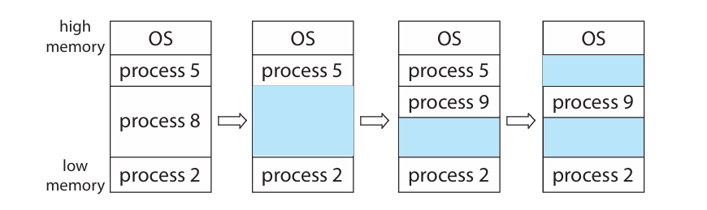
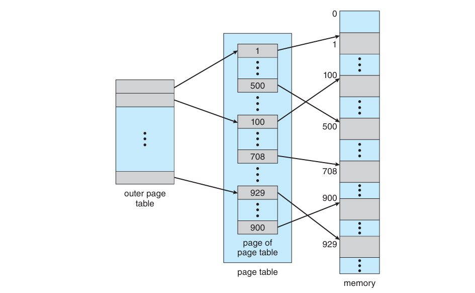
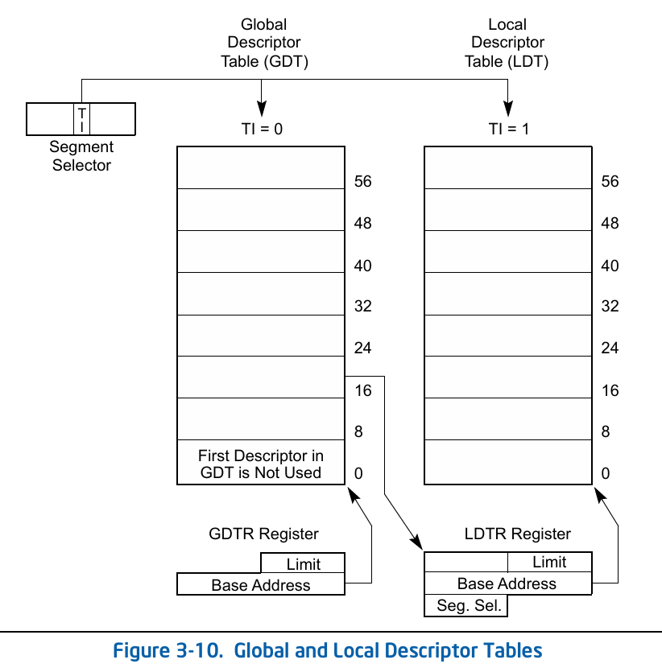
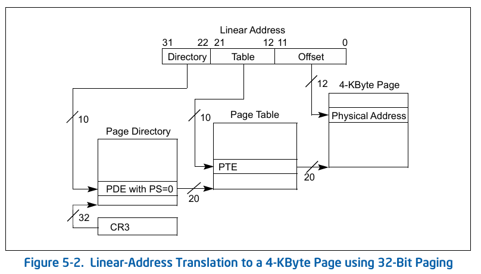

笔记¶
10 (出勤) + 40 (Lab) + 50
期末:
单选: 40 x 1.5=60
填空 10x1
大题 30: 内存必考（比较难），Synchronization 必考，Scheduling 必考
Memory¶
- 存储 0-1 bit 的地方, 8 bit 构成 1 byte, a byte's meaning depends on how you interpret it.
- 每个 Byte 有自己的地址
CPU¶
Register, ALU, Control Unit...
DMA - Direct Memory Access¶
What is an OS¶
OS:
- old school definition: resource abstractor and resource allocator.
Boot process:
- Boot loader
- init process
- wait for an event
Multi-programming:
- Single program
- Batch
- time-sharing
Kernel size: lean & mean: nothing more & single-minded
Syscall Instruction
- x86: int 80h
- x86-64: syscall
- ARM 64: svc
- RISC-V 64: ecall
Syscall Number: syscall table's index
Linkers and Loaders:
- ELF 的结构
Static Link: 可移植性强，二进制大
Dynamic Link: 可移植性差，二进制小
interpreter: ld-linux.so
Who setups ELF mapping: execve
start_kernel_thread_common: 静态链接将 entry point address 也就是 PC 赋值给 pt_regs 里的 PC，动态链接用的就是 ld.so 的
{kind=link}
{kind=link}
Monolithic: UNIX
Microkernel: Mach
Process¶
Concept¶
Process: A unit of resource allocation and protection.
进程：资源的组织和保护的单元，线程：执行的单元
program becomes a process when it's loaded into memory
Process: code + data section (from ELF) + program counter + content of registers + stack + heap
Runtime Stack: Stack Frame 栈帧 随函数调用不断变化
Invented by Dijkstra
ARM
stp x29, x30, [sp, #-64]!
x29: frame pointer, x30: link register / return address,
sp = sp - 64
mov x29, sp
update frame pointer
Stack 和 Heap 中间的空间有限 比如无限递归导致 stack overflow
Control Block (PCB)¶
PCB: Process metadata 存储进程的元数据
process state, process number, process counter, memory limits, list of open files...
Linux 中用 task_struct 存储
pid: Process Identifier
State: 示意图必考
- New: 进程被创建
- Setup from scratch: 第一个进程
- Fork: 父进程 -> 子进程，完整地抄过来，仅有 pid 不同
ps xao pid,ppid,comm
构成树形结构 Process Tree
子进程挂掉可以由父进程重启，systemd 挂了，整个用户态就没了，内核会物理重启
idle(0) - start_kernel(), systemd/init(1), kthreadd(2)
kernel thread daemon 起内核态进程
systemd 起用户态进程
idle 原本的进程在 start_kernel 之后 fork 到每个 cpu 核心上，起 systemd 之后，退化为 idle
CPU 没有任何任务可以运行时就会去运行 idle. idle 可以把 cpu 核心 shutdown 省电
fork() System Call
不接受参数，完整拷贝父进程，然后给父进程返回子进程的 pid，给子进程返回 0, 失败返回 -1
fork() 是 syscall, 返回之后 PC 指向下一行汇编，于是父进程和子进程都从这里继续运行
```c
pid1 = fork();
printf("hello\n"); // 2 次
pid2 = fork();
printf("hello\n"); // + 4 次 = 6 次
```
exec() System Call
loadelf, 把原本程序后面的代码全都抹掉了，所以不 fork 直接 exec，后面的代码都不会执行
如果 fork 之后父进程 exec 变成别的程序了，子进程结束后不会被回收，变成 orphan
fork 的安全性问题，如果不分 systemd 和 kthreadd, 用户态进程可以根据自己的 memory layout 推测内核的内存映射
- Terminate: 子进程
exit(), 父进程可以用wait()waitpid()等待子进程完成 子进程结束会发送 SIGCHLD 信号 强行结束，可以通过发送 Signal 完成 Ctrl+C: SIGINT, 还可以发送 SIGBUS (segmentation fault 时), SIGKILL signal 可以自定义 handler, 除了 SIGKILL
zombie: 不占用 CPU 但还占用内存的进程. Remain undead
orphan: 父进程挂掉，子进程变成 orphan. Adopt by systemd / init on Linux, 原来是 pid=1，现在变成小号了 orphan will never becomes zombie, systemd can handle it properly 因此可以实现永远不会变成 zombie 的进程, fork 两次, kill 儿子，孙子就会被领养 task_struct, mm_struct 等等都可以把 list_head 作为一个成员，从而成为双向链表
- Ready, Running, Waiting:
waiting queue 的数量 = waiting target 的数量
Context: 寄存器 Context Switch: 因为 CPU 的寄存器只有一份，要不然原来的进程回来的时候都不知道自己跑到哪了 context switch 的时间是 pure overhead, 越短越好
kernel space context switch
user space context switch P0 User - 时钟中断 - P0 Kernel | context switch | P1 Kernel - P1 User kernel_entry 的时候，将 P0 的寄存器存在了内核的栈上，具体的位置叫 pt_regs (per thread regs) kernel_exit 的时候，将 P1 的寄存器恢复
fork() 的返回值在哪里写的 - 对于父进程，kernel_entry 进入内核后，pt_regs->regs[0] = pid - 对于子进程，copy_thread 的时候，childregs(也就是 pt_regs)->regs[0] = 0 为什么 fork() 能返回两个值，因为 fork 之后有两个 user context, 可以修改
fork syscall: kernel_clone() -> copy_process() -> copy_mm(), copy_thread 各种 copy
Process Schedule¶
Scheduling: determine which process should run and for how long
决定了系统的吞吐量和反应速度
Pre'emptive Scheduling: 抢占式调度
Non-preemptive Scheduling: 非抢占式调度 跑到不想跑为止，不会出现 Running 到 Ready 的情况
Criteria and Objectives:
- Max CPU Utilization
- Max Throughput
- Min Turnaround Time
- Min Waiting Time
- Min Response Time
这些目标是互相矛盾的，需要权衡
Dispatch Latency: 两个任务切换之间的时间，Pure overhead 越小越好
Algorithms:
First Come First Serve (FCFS)¶
先到先得
会出现 Convoy Effect, 前面的太慢拖慢了整体的速度
Shortest Job First¶
Optimal, 但是不能在线
Round Robin (RR)¶
轮询
Prority¶
Starvation: 优先级太低的进程永远得不到 CPU
解决方法 Priority Aging: 随着等待时间增加，优先级增加
Multi-level Queue Scheduling¶
队列内部调度+队列之间调度
Real-time process, System process, Interactive process, Batch process
Multi-level Feedback Queue Scheduling¶
进程可以在不同的队列里移动 (promote / demote)
比较短的任务优先级一直在比较高的队列，如果一直占用 CPU，会慢慢移动到优先级低的队列里
Multi-thread, Multi-core Scheduling
SMP
HART: Hardware Thread
Load Balancing: 任务在不同的 CPU 之间分配: push migration, pull migration
Soft affinity, hard affinity 确保进程在某个 cpu 上运行
Windows: 越高优先级越高 Linux: nice 越低优先级越高
Linux 0.11: Round Robin + Priority
priority
Linux 2.6: O(1) scheduler, active, expired, active queue, expired queue
bitmap 对应 141 个优先级 (32 * 5 = 160 > 141), 然后用 bsfl 找到最高位的 1, 也就是最高优先级的进程
prio_array.head_queue[bsfl(bitmap)].task_struct
现在的 Linux: Completely Fair Scheduler (CFS)
期末必考: Gantt 图，计算 Waiting Time, Turnaround Time
do_timer()
nice [-20, 19]
Nice 越大，coutner 越小，时间片越短
https://elixir.bootlin.com/linux/2.4.31/source/kernel/sched.c#L622
{kind=link}
Nice 越大，weight 越小，调度越靠后
https://elixir.bootlin.com/linux/2.4.31/source/kernel/sched.c#L182
{kind=link}
IPC Inter-Process Communication¶
进程之间的交流
进程内部 Intra-Process Communication
{kind=link}
浏览器 v8引擎的进程使用了 seccomp 限制只能用 4 个 syscall: read, close, sigret，称之为沙箱
进程间通信模型:
- Message Passing - 适合小规模通信
- 每次都需要内核介入，会有 syscall 的 overhead (来自 context switch)
- Shared Memory - 适合大量通信，overhead 较小
- 建立 Shared Memmory Segment
- 其他进程可以 attach
- 无需内核介入
- Pipe
{kind=link}
POSIX 的共享内存标准:
shmget, shmat (attach), shmdt (detach), shmctl....
ipcs -a 可以看到 shared memory id
拿到这个 id 谁都可以访问，不是很安全
现在一般用线程来干这个事情了
Message Passing: send(), recv()
链路 (Communucation Link)
- Physical: Shared memory. Hardware bus, Network
- Logical: Direct / Indirect, Synchronous (Blocking, 不交到手里不走)/ Asynchronous (Non-blocking 放门口就走), Automatic / Explicit buffering
Direct: 问题是连接太多
Indirect: Share a common mailbox
Pipe: pipe syscall, 一般是单向的
fd[0] 读, fd[1] 写
{kind=link}
- Ordinary Pipe: 普通管道 / 匿名管道，一般是单向的
- Named Pipe: 有名字，无关系的进程都可以进行管道通信，双向的
UNIX Pipes: Mono Directional 单向的
Client-Server Communication:
- Sockets, RPC (Remote Procedure Call), Java RMI (Remote Method ..)
Thread 线程
A thread is a basic unit of execution within a process
一个进程内的多个执行单元
Thread has its own:
- Thread ID, PC, Register set, Stack
Thread shares:
- Code section, data section, heap, open files and signals
Conccurency: Can do multiple things at a time.
{kind=link}
一个进程至少包含一个线程
使用线程的好处:
- Economy: Cheap, Context switch is cheap
- switch_mm(), cpu_switch_to() 切换进程需要切换内存空间，切换进程不需要
- Resource Sharing: Naturally Share Memory (Heap, code, data segments)，不需要 ipc
- Responsiveness
- Scalability
坏处: 隔离性变差了
- 一个线程挂了 (比如 segfault)，整个进程都挂了，没有隔离
- 内存空间共享，不安全
ps -eLF: PID, PPID, LWP (Lightweight Process)
多线程的进程，PID 是 leading thread IP 最开始的线程 ID
task_struct() 也是每个线程有一个，看到的是 leading thread 的 task_struct
严格来讲 task_struct() 不算 PCB
User threads vs. Kernel threads
用户态的线程与内核态线程有对应关系
- Many-to-One: 一个线程调用了 syscall 进入内核态线程，其他线程如果想要 syscall 需要等待
- One-to-One: 每一个用户态线程都有一个内核态线程，解决了前面的问题，但是产生了较大 overhead
- Many-to-Many: 多对多
- Two-Level: 既有多对多也有一对一
Linux 和 Windows 都是 One-to-One，因为内存和 CPU 算力变便宜了，随便造
pthreads: POSIX threads
Java green threads: many-to-one, now with native threads
Linux 中线程语义下的 fork() 和 exec()
- 那个 thread 调用了 fork 就 fork 谁
- exec 会抹掉所有的线程，替换 ELF 和 address space
Linux 线程的信号
- 开发者可以指定那些线程接收信号，提供了一系列 API
结束线程 Thread Cancellation:
- Asynchronous: 立即结束 -- 容易造成非常难调的 bug
- Deferred: 线程在自己认为可以安全结束 (cancellation point) 的时候再结束
Thread Scheduling
- process-contention scope 对应进程粒度调度
- system-contention scpoe 对应线程粒度调度，每个线程在整个系统内竞争时间
Linux 和 macOS 都以线程为粒度调度
Linux Threads (LWP, Lightweight Process):
- clone() 系统调用创建一个线程
- 可以控制和 parent 共享哪些东西:
CLONE_FS,CLONE_VM(共享地址空间),CLONE_SIGHAND,CLONE_FILES
Thread Control Block (TCB)
Linux 中的 TCB 就是 task_struct，
创建新的线程时，pid, stack, ... 重新分配，mm_struct, files, ... 直接拷贝
task_struct 内部有 thread_group (list_head) 把所有线程串在一起
{kind=link}
stack 对齐到 0x4000 (16K 对齐), task_struct 的分配: slab, slub ...
用户和内核态的线程:
{kind=link}
Kernel Space 的栈固定大小 16 KiB (Linux)，且用户态无法访问
User Space 栈的大小不固定
进入内核态的时候，pt_regs 存在对应的内核线程的栈上
Synchronization
Race condition
多个线程同时写一块内存，会造成数据不一致性，最终的结果依赖于指令执行的顺序
单个核心也有可能出现 (补图)
内核线程的 race condition 经常发生
- critical section: 多个线程共同执行的一段代码
- entry section: 线程进入 critical section 前会请求 permission 进入 critical section
- exit section: 线程退出之后释放掉 permission
单核处理器: 关掉中断
多核处理器: 解决 data race 需要满足下面三个条件 重要
- Mutual Exclusion: 互斥访问
- Progress: 空闲让进: 如果没有线程在 critical section, 需要让一个线程能够进入 (make progress)
- Bounded waiting: 有限等待, 避免 starvation
解决方案:
- Peterson's Solution: 只对 2 进程有用（假设访存是原子操作）
- flag[2] 该不该进入 critical section, turn 该谁了
- 互斥访问: 枚举所有情况
- 空闲让进
- 有限等待: flag = FALSE 让某个线程不会一直进入
Memory Barriers:
- Strongly Ordered: 一个内存修改需要被其他核心立刻看到 (需要同步的 overhead)
- Weakly Ordered: 内存修改过一会之后才会被其他核心看到
- Memory Barrier: 强制内存修改在核心间同步
test-and-set instruction
- 硬件提供一个原子操作
- 满足 exclusion 和 progress
- 不满足有限等待 （存在可能非常倒霉的线程）
解决方法: lock 不断传给下一个在等待的线程
compare-and-swap instruction
- 同样要求原子操作，如 x86 的 lock cmpxchg，ARM 的 (ldxr) load-exclusive 和 (stxr) store-exclusive
- 如果等于 expected, 就设置为 new_value, 同时返回 value 原值
Mutex (Mutual Exclusive) Locks 互斥锁
原子操作获得/释放互斥锁
问题:
- T0 acquires lock -> INTERRUPT->T1 runs, spin, spin spin... -> INTERRUPT->T0 runs -> INTERRUPT->T1 runs, spin, spin spin...INTERRUPT-> T0 runs, release locks ->INTERRUPT->T1 runs, enters CS
只有 T0 有锁，其他的线程在时间片内都一直在做无意义的等待 (busy waiting)，浪费了 CPU 时间
如果有 N 个线程，就浪费了 (N-1)/N 的 CPU 时间
解决方法: Semaphore (Dijkstra)
如果线程将要 busy waiting, 就进入 sleep queue， 不会再被调度
两种操作 - block: 重新调度，随后线程进入 SLEEP - wakeup
S->value 的初值可以设置为可以利用的资源的数量
减少了 busy waiting time
wait 和 signal 不能被打破，都需要是原子的
Mutex 和 Semaphore 的适用场景: 长与短要与 context switch 的时间比较
- 如果 Critical Section 很短，适合 Mutex / Spinlock
- 否则 Semaphore 更适合，因为重新调度有上下文切换的开销
Linux 内核里 critical section 一般都是取一个内存的值/修改， 所以 spinlock 很常用
编程时一定要避免持锁去 sleep
Deadlock and Starvation
P0 拿到 S -- P1 拿到 Q -- P1 等待 P0 的 S -- P0 等待 P1 的 Q
有死锁一定会 starvation, starvation 不一定是死锁造成的
Priority Inversion:
低优先级的线程持锁，会让需要锁的高优先级的线程，反而不如不需要该锁的 中优先级线程先跑，造成 P_H 实际的优先级和 P_L 一样了
解决方法: 优先级继承, 持有高优先级锁的低优先级线程，优先级会升级
Linux 2.6 之前采用关中断的方式提供了 critical section 的防护 （因为只有单核）
Linux 提供 mutex, semaphore
POSIX 的实现 pthread_mutex, semaphore, sem_wait...
Condition Variable (Dijkstra)
broadcast: 相当于 wakeup all
Synchronization Examples 线程同步与实际问题
- Bounded-buffer problem
Producer 向 buffer 写入，Comsumer 从 buffer 移出
需要确保 Producer 不会在 buffer 满了的时候写入，确保 Consumer 不会试图在 buffer 为空的时候读出
解决方法:
- Semaphore mutex, 用来保护 buffer 的修改
- Semaphore full-slots， 初值为 \(0\)
- Semaphore empty-slots，初值为 \(N\)
void producer () {
do {
// produce an item
wait(empty-slots);
wait(mutex); // mutex 不能移到 empty slots 前面，带锁 sleep 以及死锁
// add the item to buffer
signal(mutex);
signal(full-slots); // 不能放到写入 buffer 前面
} while (true);
}
void consumer() {
do {
wait(full-slots);
wait(mutex);
// remove item from buffer
signal(mutex);
signal(empty-slots);
}
}
-
Readers-writers problem
-
Semaphore mutex，用来保护 readcount
- Semaphore write, 初值为 \(1\)
- int readcount = 0
void writer () {
do {
wait(write); // 写与所有操作都互斥
// write
signal(write);
} while (true);
}
void reader() {
do {
wait(mutex);
readcount++;
if (readcount == 1) // 只有第一个 reader 需要屏蔽写，多个 reader 可同时读
wait(write);
signal(mutex);
// reading data
wait(mutex);
readcount--;
if (readcount == 0) // 最后一个 reader 读完，就可以允许写入了
signal(write);
signal(mutex);
} while (true);
}
假设有一个 writer 在写入，
第一个 reader 会等待在 wait(write) 上，而后面来的 reader 都会等待在 wait(mutex) 上
writer 写入完成，signal(write) 会唤醒第一个 reader，随后第一个 reader signal(mutex) 唤醒其他所有 reader.
变种1: Reader first, 让 Reader 先读 （上面的例子是 reader first），但是有 writer starvation
变种2: Writer first，如果 Writer 和 Reader 都在等，让 Writer 先写，有 reader starvation
如果 mutex 换成 spinlock，会有 busy waiting 的问题
- Dining-philosophers problem (Dijkstra)
Multi-resource synchronization 多个资源
解决方法：
- semaphore[5] 都设置为 1
void philosopher(int i) {
do {
wait(chopstick[i]);
wait(chopsticl[(i+1)%5]);
// eat
signal(chopstick[i]);
signal(chopsticl[(i+1)%5]);
// think
} while(true);
}
上面的代码可能发生死锁，因为五个人如果都先拿左边的筷子，那再也拿不了下一根筷子了
Dijkstra 给出了解决方法，奇数的人先拿左边，偶数的人先拿右边
Deadlock 死锁
现代 os 不预防或者解决死锁问题
发生 deadlock 需要四个条件:
- Mutual Exclusion: 资源互斥
- Hold and wait: 拿着一部分资源去请求另一个资源
- No preemption: 资源不能被抢占
- Circular wait: Resource Allocation Graph 中形成了一个环，且环包括了所有的 process
Deadlock Prevention: 打破死锁形成条件
- Mutual Exclusion: 如果是共享资源就不做成互斥的
- Hold and wait: 只能拿所有资源或者不拿，如果没有所有资源就放弃 - 有 starvation 问题
- No preemption: 线程可以抢占其他线程的资源
- Circular wait: 加一个请求资源的顺序
Deadlock Avoidance: 计算是否处于 safe state，safe state guarantee no deadlock
Impractical!: require extra information about how resources are to be requested
单个种类的资源: resource-allocation graph
多个种类的资源: Banker's Algorithm
- Resource-allocation Graph: claim edge, request edge, assignment edge
- Banker's Algorithm
{kind=link}
计算向量 available 和矩阵 need
执行之后 available += allocation
{kind=link}
Deadlock Detection:
维护 wait-for graph，点只有线程，如果存在环路就死锁了
{kind=link}
检测环路的经典算法: 一个一次走一步，另一个一次走两步，如果快指针跟上了慢指针就存在环了
Multiple InstanceL 类似 Banker's Algorithm
Deadlock Recover:
- terminate process，每隔一段时间，一个一个 kill，检测是否还死锁
- 选择 Kill 那个进程也可以有很多考量，但简单的话就随机选一个了
Main Memory
内存管理: Partition -> Segmentation -> Paging
如果任务需要的内存比主存大:
- 分治，一段一段加载进入内存 like compiler passes
内存中要同时运行多个进程:
-
Partition: Protection, Fast execution, Fast Context switch
-
此时加载一个程序:
- 进行内存地址的重定位
- 缺点:
- 程序加载进内存后，几乎不可能再移动（task struct 的 PC，全部的内存地址，数据中的指针... 都要更改）
- 内存碎片化，又因为程序不能再移动，无法缓解
{kind=link}
思路: 将程序内使用到的内存地址都是一个相较于程序开始位置的偏移量，这样就允许了移动
解决方法: 引入逻辑地址，在运行时被转化为物理地址。逻辑地址为分区内部的偏移量
- 0x14000 开始的程序，逻辑地址 0x00346 转换为物理地址 0x14346
- 不考虑复杂情况，此时可以移动一个程序
硬件实现:
- 添加 base 和 limit 寄存器
- 添加一个硬件逻辑地址和物理地址的转换（即检查 offset 与 limit，再 + base）
- 修改 base 和 limit 寄存器的指令必须是特权指令
{kind=link}
{kind=link}
必考: first-fit, best-fit, worst-fit
Partition Strategies
- Fixed Partition: Partition 大小需要 trade off
- 如果程序需要的内存大于一个 partition - 只能像之前一样分治，分别 load
- 如果程序小于一个 partition: Internal Fragmentation 碎片化，浪费了内存
- 但是没有 external framentation
- Variable Length Partition:
- Parition 大小根据程序需要自动变化，实现比较复杂
- External Fragmentation
- First fit (找第一个), Best fit (找空闲 size 最接近的)，Worst Fit（找最大的空闲空间）选择题
- 
{kind=link}
Segmentation
ELF Section 与 Segmentation / Partition 之间的关系: 节省分段防止碎片化，一般多个权限相同的 section 会合并成一个 Segment
这时候出现了多个 segment, 需要多组 base limit，而硬件不可能做那么多组寄存器
用一页内存专门存储多组 base, limit (segmentation table)，根据 segment-number 查询
此时逻辑地址变成了
Logic Address and Physical Address:
- Logic Address: 假想的地址空间，没有对应的存储空间，必须要映射到物理地址
- v1: offset within partition
- v2: segment-number and offset
- Physical Address
Memory Management: separate logical address and physical address
MMU: 硬件加速逻辑地址与物理地址的内存转换
{kind=link}
Segment 分段时, MMU 也需要包括查询 Segment Table 的过程
segmentation register table 里标记了段的权限:
{kind=link}
Paging: fix-sized partition 的改进
- Divide physical address to fixed-sized frames: 物理地址对应帧
-
Divide logical address to same sized pages: 逻辑地址对应页
-
keep track of the mapping between pages and frames: Page 和 Frame 的映射
- Page Table: Mapping to translate logical to physical address
Paging 的碎片:
- No external fragmentation
- Has internal fragmentation，但是浪费的大小比 variable length partitioin 少，只会浪费最后一个 page 的空间
- worst case: 1 frame - 1 byte
- average: 1 / 2 frame size
Page size / Frame size 大小的选择:
4 KiB (Linux), 64 KiB, .... 随内存变便宜，有变大的趋势
Page table:
{kind=link}
逻辑地址与物理地址转换过程:
{kind=link}
页表里面只存了帧号，没存页号，因为 index 就是页号（syscall number, segment number, page number 都相同）
此时逻辑地址变成了:
- 32 位地址，4 KiB 页: page offset: 12 位，page number: 20 位
Page Table 如何存储:
- 寄存器: 好处是快，但寄存器数量有限，不够存储，且 context switch 需要切换所有的
- 内存: 用 PBTR (x86: cr3; aarch64: ttbr0, ttbr1; risc-v: satp) 指向内存中页表的开头
- 加速: 页表独有的 cache: TLB (translation look-aside buffer)
- TLB 上下文切换:
- Option 1: 上下文切换清空 TLB
- Option 2: 用 ASID 识别是哪个进程的
- Page Table 需要物理连续，这是因为 MMU 只认识物理地址 (syscall table 只需要虚拟地址连续)
{kind=link}
TLB Hit ratio 需要多少才能减少 overhead —— EAT (effective access time):
{kind=link}
在程序正常运行之后，TLB hit ratio 可以接近 100%
内存的隔离与保护:
将权限位保存到 PTE (Page Table Entry) 里面
{kind=link}
Valid 位: 没有映射的页，因为虚拟地址空间有很多地址都是没用上的
Page Sharing: 运行两次程序，有哪些东西可以共享
- code 段，rodata 段，库（也是 ELF，可以共享 r--, r-x 的段）
- 通过共享 page 节省了内存
Segmentation: 1961, Paging: 1962；但是 TLB 硬件 (full-associative) 很难实现，所以 Paging 受制于硬件
Hierarchical Page Table 层级 页表:
- 一级页表: 32 位地址空间: 4 GiB / 4 KiB = 1 M 个 PTE, 1M*4Byte = 4M 需要 4M 物理连续的页表
- 现实中程序的地址空间有很多用不到的地址 (hole)，有很多 PTE 是可以省略的
- 一个页可以放 1024 个 PTE，把一级页表中的 1M 个 PTE 每 1024 个存到一页里，需要 1024 页
- 如果没分配的话，那么第一级设置成 invalid，不需要第二级找一个页来存了，立省 1 页内存
- 二级页表:
- 此时的寻址方式: 拆成 addr[31:22], addr[21:12], addr[11:0]
- addr[31:22] 共 10 位用于在一级页表寻址 (PGD, Page Global Directory，如果在中间，叫 PMD: Page Middle Directory, PUD: Page Uppder Directory, P4D)
- addr[21:12] 共 10 位用于在二级页表寻址 (PTE, Page Table Entry)
- addr[11:0] 用于在页内寻址 (page offset)
- 需要多访问两次内存，TLB 越发重要
- 为什么省内存: 页表按需分配，设置 Invalid 位，后面就不用分配一个页表页
{kind=link}
4KiB, 64bit address, 3级页表 9+9+9+12 共 39 位，可以寻址 512 GiB，9+9+9+9+12 可寻址 256 TiB 内存，9+9+9+9+9+12 可寻址 128 PiB 内存，这就是现在的 39-bit, 48-bit, 57-bit 内存地址
- 4 KiB 页，1级页表一项代表 4 KiB, 2级 2 MiB, 3 级 1 GiB, 4 级 512 GiB, 5 级 256 TiB
64 KiB, 64bit address, 2级页表 13+13 (64 KiB / 8 Byte) +16 (64 KiB) 共 42 位
Hashed Page Table:
{kind=link}
- 优点: 虚拟地址空间很大，但只用了很小一块内存，可以节省（存得稀疏时无需链表）
- 缺点: 哈希比较慢，哈希函数选不好会造成多次访存（链表）
Inverted Page Table:
- SV39：寻址 512 GB 内存
- 但实际上（比如手机）远远没有这么多物理内存
- 用很大的虚拟地址空间来寻址消耗很高
- 于是有下面的设计:
{kind=link}
- 每个页表项存储的是 pid 和 page number ，而其 index 是物理帧的编号（反过来了）
- 每次查询要遍历 page table 找到对应的 pid 和 p，取 index 作为物理帧
- 由于 index 做了物理帧编号，不能实现多进程共享物理帧（链表！？）
- TLB Miss 后由于需要遍历，性能很低
Swapping: 用硬盘来扩展物理内存
{kind=link}
- 如果在 swap 的背景下做 context-switch，线程数据 100 MiB，硬盘速率是 50 MiB/s
- 需要 2s swap out 再 2s swap in，总共需要 4s
- 如果有 Paging，就不需要把整个进程的数据 swap 到硬盘
{kind=link}
Intel 和 Arm 的分页
-
IA-32: 支持 Segmentation 和 Paging
-
Segmentation: 最高 4 GiB
-
支持每个进程 16 K 个 segment，远超需要（ELF 大概十几个）
-
Segmentation 被分为两个 8K: LDT, GDT
- 
-
Paging: 4 KiB / 4 MiB 大小
- 
- 4 KiB: 两层页表， 4 MiB: 一层页表
{kind=link}
{kind=link}
{kind=link}
{kind=link}
32 bit 寻址大于 4 GiB 的内存: PAE (Physical Address Extensions)
{kind=link}
把页表项从 32bit 换成了 64 bit，支持到了 64 GiB，此时一页只有 512 页表项，变成三级页表 2+9+9+12
- Intel-64
- Page size: 4 KiB, 2 MiB, 1 GiB
-
39, 48, 57 bits
-
ARM: 直接上了 Paging
Virtual Memory
-
Demading Paging
-
Unused code: error handling code, unusual routine, Unused data: large data structure
- 想法: run a partially loaded program 程序不全部加载进内存就执行
-
加载 ELF _start 的代码段，然后就可以开始跑了
-
如果运行到某一地址，没有到物理地址的映射，产生 Page Fault
{kind=link}
- Demand 意味着访存
malloc出来的内存，在读/写的时候才真正分配物理内存- 如果 index 超过了 malloc 的范围，触发 Segmentation Fault
-
如果在 malloc 的范围内，触发 Page Fault
-
谁能够引起 Page Fault: 访存
- 那个硬件触发 Page Fault: MMU - TLB Miss && Page Table Entry 对应 Invalid
- 谁处理 Page Fault: OS
{kind=link}
malloc 并访存的的全过程:
{kind=link}
-
malloc调用brk()(break) 在堆中申请内存 brk()将程序的Size提高，操作系统返回给程序申请成功，但并没有真正映射物理帧- 程序访问到新申请的内存，MMU 触发 Page Fault，进入 Kernel
- Kernel 发现确实申请过这块内存，所以分配一块物理帧，并维护页表
Kernel 本身申请的内存:
kmalloc: 物理连续，虚拟连续vmalloc: 物理不连续，虚拟连续- kernel 申请的内存立即分配
Kernel 对 Page Fault 的处理
vm_area_struct“账本”: 存储 vm_area 的开头、结尾和权限- 如果在范围内，且权限正确: 分配物理内存
- 不在范围内或权限不正确: Segmentation Fault
- 使用平衡树（红黑树）快速找到某个地址处于哪个 vm_area
{kind=link}
{kind=link}
MMU 走页表发现 invalid，触发 Page Fault, kernel 分配并更新页表，回到原来的指令再执行一次，MMU 再一次发现 TLB Miss，走页表，找到物理地址，成功执行，把页表项拿到 TLB 里。
过程: （读取 file-backed 的 data, text 段）
{kind=link}
- 4 最费时间: 所以这个时候进程会被放到 disk 的 wait_queue 上，然后再调度
- disk 加载完触发 interrupt，操作系统会把进程从 wait 改成 ready
- 恢复后跑的指令还是触发 page fault 的那条
- 如果是其他非 file-backed 段，可以省略 3 , 4 两步
- 有需要读磁盘操作的 Page Fault 叫做 Major Page Fault
- 否则称作 Minor Page Fault
Segment 的粒度太大了，不容易实现 Demand ”Segmentation“
优点:
1. 时间换空间
1. 可以 Partially load 一个程序
- Lazy swapper
- Pre-paging: 利用空间局部性，提前加载附近的内存 （空间换时间，减少了 Major Page Fault）
- 如果一条指令能同时访问多个 Page: Multiple Page Faults
Page Fault: 如何找到 Free Frame
操作系统维护一个 free-frame list
Worst Case 下的 Demand Paging 全过程:
{kind=link}
{kind=link}
{kind=link}
绿线: Thread 0；红线: Thread 1
EAT 计算:
{kind=link}
如果要 PF 的 overhead 小于 10%，要求 40 万次访存才能出一次 PF，真实系统中远小于 10%
-
有 Locality 和 Page Cache （文件提前缓存到内存里）两种机制
-
Copy-on-write
-
More efficient fork (copy-on-write)
- vfork syscall
{kind=link}
{kind=link}
Ditry CoW 提权漏洞
Page Replacement: 如果内存被占用光了，如何替换？
- 如何替换
{kind=link}
- 选取机制
{kind=link}
Page Replacement
Algorithms:
- FIFO 对应 Scheduling 的 FCFS
- OPT 对应 Scheduling 的 Shortest Job First / Shortest Remaining Time First
- LRU
- Least Frequent Use / Most Frequent Use
必考: 给一串 Page Number 和算法，计算 Page Fault 数量
调度: 甘特图，Average Waiting Time, Average Turnaround Time
Thrashing: Locality 不高 Page 被频繁换进换出，CPU 使用率不高
Alan Ott's Slides:
Vitrual Memory
Advantages
- 每个程序有不同的内存映射（有自己的页表）
- 天然的内存保护
- Kernel RAM 对用户态进程是不可见的
- 硬件可以通过 MMIO 映射到内存地址空间
两个地址空间
- 物理地址空间
- Hardware: DMA, peripherals
- 虚拟内存空间
- Load/Store instructions (RISC)
- push pop... (CISC)
MMU: 负责地址转换，一般在 CPU 内部，和 RAM Controller 不同
Lazy Allocation: 内存分配发生在 access 时
虚拟地址本分成两部分，低地址给用户，高地址给内核
32-bit 中，在 0xC0000000 分开 (内核 1G, 用户 3G，在 CONFIG_PAGE_OFFSET)
/proc/self/map 看起来虽然是 f 开头，但前面还有 4 个 0，依然是 User Space 的
用户态进程 context switch: 切换 mm_struct （以及里面的 PGD）
switch_mm
{kind=link}
{kind=link}
64-bit 内核空间和用户空间大小区分:
48 位虚拟地址:
0xFFFF0000_00000000-0xFFFFFFFF_FFFFFFFF 内核空间: 256 TiB (2^48 - 2^64)
0x00000000_00000000-0x0000FFFF_FFFFFFFF用户空间: 256 TiB
中间的无映射
39 位虚拟地址:
前25位全0: 用户，全1: 内核，各 512 GiB
用低39位
Kernel Logic Address
如果物理内存比较小
直接取低 896 MiB = 1 GiB - 128 MiB，Linear Map 映射到 Kernel Logic Address （线性映射）
对于更大内存的物理设备，取高 128 MiB 不停地重复利用，既可以给内核用，也可以给用户进程用
可以保证更大的内存可以映射到内核空间（利用这 128 MiB 的空闲）
low map, high map, fixed map....
从物理地址找虚拟地址: rmap reverse mapping
Mass-Storage Strucutre
{kind=link}
Hard Disk
- Position time = seek time + rotational latency
- Positioning time: Random-Access time
Disk Scheduling: 减少 Access Time
Algorithms:
- FCFS
- SSTF (Shortest Seek Time First)
- SCAN, C-SCAM
- LOOK, C-LOOK
给 Cylinder Number, 计算
FCFS:
{kind=link}
移动距离: 640
SSTF: 每次去最近的 Cylinder，不一定最优，有可能 Starvation
SCAN: 电梯算法，从一头到另一头，再从另一头回来，236
{kind=link}
C-SCAN: 从小往大扫，到头就归0，每次都从一个方向扫
LOOK / C-LOOK: 不用走到头，走到最大 / 最小即可
SSD 没有磁头，FCFS 即可
IO 比较多:
IO 不多:
考点:
CPU Scheduling 计算 average waiting 和 average turnarount
Page Replacement 计算 Page Fault 数量
磁盘调度计算移动距离
Linux:
ramdisk 负责在任何文件系统挂载之前，提供一个基本的文件系统
NAS, NFS, iSCSI, infiniband
RAID: Redundant array of indexpensive / independent disks
- Data Mirroring: 数据备份
- Data Striping: 把数据切分到多个磁盘上
- ECC
RAID 0: 只分散，不冗余
RAID 1: 只冗余（1:1 镜像）
RAID 2： bit-level 分散到所有磁盘，用 Hamming Code 纠错
{kind=link}
4 bit data + 3 bit parity
缺点: 按比特分散，粒度太小，很难拼起来，且写一个字节就要启动 7 块磁盘
RAID 3:
Bit-interleaved parity: 以 bit 为粒度的 RAID 5
RAID 4:
Block 为粒度的 RAID 2
RAID 5:
Block-interleaved parity
{kind=link}
RAID can only detect and recover from disk failures
ZFS
{kind=link}
{kind=link}
I/O System
Polling: CPU 主动询问
Interrupt: CPU 被动
CISC: 比如 x86 的 in, out, ins, outs
RISC: mmio: memory mapped I/O
Polling 会造成 busy waiting (spin lock, mutex)
Spin lock - Semaphore: 线程 sleep 丢到 waiting queue 然后 reschedule
Intrrupt:
- T1 访问 Device，随后 sleep 并把 task_struct 挂到 Device 的 waiting queue 上，此时 context-switch 到其他线程继续运行
- Device 准备好后发 interrupt，data 准备好，把 T1 放到 ready queue
{kind=link}
Polling vs Interrupt:
Interrupt vector:
ARM64 的 system call
调用 system call 的指令: svc, hvc, smc
对应的 interrupt: el0_sync: Synchronous 64-bit el0 (User Mode), 5.14 开始就没有这个标号了
{kind=link}
RISC-V: do_trap_ecall_u
interrupt 也有 core affinity
DMA: direct memory access
{kind=link}
程序: 通过 ioctl 系统调用读取文件，ioctl 对 driver 发送指令
driver: 驱动，跑在 CPU 上
controller: 在设备
DMA: xPU 上的 kernel 能访问 CPU 的共享内存
I/O 设备的种类:
{kind=link}
I/O 设备的 waiting queue:
{kind=link}
{kind=link}
fd_array 的 index 就是 file_descriptor
所有东西都抽象成文件，方便使用（读写文件的方式都解决了）
I/O 请求的全流程:
{kind=link}
提升性能的方法
- smart controller
- DMA
新的设备到来的时候用 register 告诉操作系统
{kind=link}
文件系统
CPU is abstracted to Process
Memory is absctracted to Address Space
Storage is abstracted to Filesystem
文件: Contiguous logical space for storing information
File Operations: Create, Open, Read/Write, Close
Directory Structure: single level, two level, acyclic graph, graph, tree ...
On-disk: 掉电仍然在
- Boot control block
- Volume control block
- Directory
- Per-file File Control Block
Im-memory structures: 掉电就没，但是可以从 on-disk 的信息中构造出来
- mount table
- directory cache
- global open-file table, per-process open-file table
File Control Block
进程元信息 -> PCB: task_struct, 文件元信息 -> FCB: inode
文件元信息: 名字，大小，权限，时间戳
相关指令: stat (statistics), file
{kind=link}
Change: 元信息修改，Modify: 文件内容修改
文件的锁: Mandatory Lock & Advisory Lock
文件访问: 顺序 sequential access 和随机 direct access / random access
{kind=link}
磁盘 - Partition / Volume - Directory
Linux 里目录就是一个特殊的文件
目录结构:
- One level, two level
- Tree
- Acyclic-Graph (无环图): 存在多个文件指向一个文件的内容
- General Graph Directory 有环的
链接:
- Hardlink
- 引用计数
- Softlink
Mount: 告诉操作系统有一个新的文件系统来，挂载到一个文件目录下，于是里面的文件就有了路径
nosuid - Block the operation of suid, and sgid bits.
suid: set uid，用文件拥有者的权限执行
ACL: Access Control List
文件系统:
Early - Hierarchical - NFS - Journaling File System - Modern File System
文件系统的层级: 六层模型
{kind=link}
文件系统的数据结构: On-disk, In-memory
文件的操作:
- Open
先去 Global Open-file Table (系统级别) 找是否有记录，
如果有记录（说明有其他进程打开过这个文件），就可以直接拿到所有的信息，
此时直接在 Per-process Open-file Table 添加一项指向 Global Open-file Table
这里的 index 就是文件描述符 File Descriptor
{kind=link}
如果没有记录，就要走 directory structure，拿到文件的 inode (FCB)，就能找到文件了
inode 是内存里面的结构
然后在 Global Open-file table 添加一项
{kind=link}
如果 Open Count 变成 0，就可以将其从 Global Open-file Table 移除了
随后相同的 File Descriptor 可以被重用
Inode number is only unique within a file system
VFS: 操作系统如何处理不同的文件系统
VFS separates FS generic operations from implementation details
不同的文件系统: FAT32, Btrfs, zfs, ext4, NTFS, APFS
All problems in computer science can be solved by another level of indirection, except for the problem of too many layers of indirection. —— David Wheeler
再加一层抽象: Virtual Filesystem 为操作系统提供统一的接口，由不同的文件系统来提供实现
{kind=link}
VFS 有四种 object:
- superblock
- inode
- dentry
- file
Linux 中的 VFS，每个操作都是函数指针，指向具体的实现
{kind=link}
调用 write:
{kind=link}
在文件被加载进来的时候，f_op 就指向了对应文件系统的实现
如 ext4_file_operations, nfs_file_operations
{kind=link}
Directory Implementation:
Linux 上 directory = file, Windows 上 directory != file
Directory 是特殊的文件，它的 data block 内存的是 directory entry (目录项), 比如 ext2_dir_entry
{kind=link}
为什么需要 rec_len? 用空间换时间，便于查找时候的跳转
dentry 结构体要求 4 byte 对齐，可以用来 reuse
找对应 dentry 的代码:
{kind=link}
比如 /home/stu/ 下面有四个文件 a, bb, ccc, text
- 4 个目录项
- 格式就是 4 个 dir_entry
找一个文件，要从根目录 / 的 inode 开始找 home，以此类推
找文件的方式:
Linear List
Hash Table: 适合小文件多的情形
创建文件的过程:
创建 inode (FCB), 然后在父目录里写一个目录项
Disk Block Allocation:
Contiguous, Linked, Indexed
Contiguous Allocation
连续分配的不幸和内存是一样的，文件大小很难变大，这是数组的问题
为了解决数组的问题，就能想到用链表
Linked Allocation FAT 文件系统使用
每个 Data Block 有一个指针指向下一个 Data Block
缺点: 慢，Pointer 占空间，浪费了空间，而且如果 Pointer 断了（比如坏块），后面的内容全丢了
Index Allocation
一段连续的空间，存一个数组，每项存储对应 data block 的 index
inode 的 i 就是 index 的意思
但是超大文件一个 block 都放不下 index，就有了多级
Linked Free Space: 把空闲的空间用链表连起来
优点: O(1), 不占空间
缺点: 链表可能断，且难以找到连续的空间
Grouping and Counting
指针指向起始的 block + 空闲长度，然后指向下一个 起始 block + 空闲长度
文件系统性能的优化
- Cache
- Asynchrnous write 写到 cache，异步写入
- Free-behind and Read-ahead
- 读有的时候会比写慢，为什么？
- 第一次读: 一级一级去查 inode, dentry 很慢
Page Cache: 先把文件读到内存里，如果用到了，那就很快，如果没用到，那也不影响（Page Cache 的优先级是最低的，内存不够会优先清除掉）
Log Structured File Systems
增强系统稳定性
Directory: inode 到 symbolic name 的映射
创建文件的系统调用:
文件描述符返回的是 per process 的 open file table 的 index
但是有三个特殊的:
- 0: stdin
- 1: stdout
- 2: stderr
用户能拿到的最小的 fd 是从 3 开始的
{kind=link}
Blocks 是底层的 block 数量，512 字节为单位，所以 4096 / 512 = 8
删除文件
{kind=link}
系统调用时 unlinkat
unlinkat 只是删除了目录项
- Hard Link: 硬链接是一个目录项 dentry
.是指向当前目录的硬链接..是指向父目录的硬链接-
Soft link: 软链接是一个文件，文件存储的是被链接的文件的 path
-
两个硬链接指向同一个文件，它的 inode 一样吗?
{kind=link}
只是放了一个目录项，并没有生成新的 inode
硬链接会增加 Link 数量，可以用 ll 看到，删除一个文件实际上是 unlink，只要 link 数还没变成 0，这个文件就还在
- 两个软链接指向同一个文件，它的 inode 一样吗?clear
{kind=link}
inode 不一样，软链接创建了新的文件
inode 在硬盘和内存都有:
内存中:
- ext2_inode_info 包含了一个 vfs_inode
硬盘里:
- ext2_inode
硬盘上的:
{kind=link}
内存中的:
{kind=link}
文件分配需要分配 inode, data block, bitmap, super block 的空间
如果存了很多小文件，inode 用光了，即使硬盘还有空间，也不能存新文件了
一个 inode 占 256 byte，一个 block 4 KiB 可以放 16 个 inode,
5 个 block 可以放 80 个 inode，也就是可以存 80 个目录或文件
{kind=link}
要找第 32 个 inode，可以计算偏移量，比如图片中的是 20 KiB的位置
读取一个文件发生的全部操作:
{kind=link}
open(bar) 的过程:
- 读 / 的 inode，找 / 的 data block 的 id
- 读 / 目录的 data block，也就是 directory entry，找 foo
- 读 foo 的 inode，找 foo 的 data block 的 id
- 读 /foo 的 dat block, 找 bar
- 读 /foo/bar 的 inode，放到内存里的 Open File Table，返回一个 index 作为 file descriptor
read() 的过程:
- 读 /foo/bar 的 inode, 找它的 data block id
- 读 /foo/bar 的 data block, 内容返回给用户
- 写 inode，更新 access time （这一步造成了 over head）
写 /foo/bar
{kind=link}
create 的过程:
- 前面四个 read 是找到 foo 的 dir entry 发现没有该文件，要创建 dir entry
- 读取 /foo 的 inode 的 bitmap，申请一块空间，作为 bar 的 inode，修改 bitmap
- 给 /foo 的 dir entry 添加一项，记录 bar 的 inode 号
- 初始化 bar 的 inode，同时这个 inode 放到内存里 Open File Table，返回 fd
- 写 foo 的 inode 修改 modification time, access time 等
write:
-
读 bar 的 inode, 找到第一个 data block 的位置，发现指向空，需要申请一个 data block
-
读 bitmap, 找一块空闲的 data block，用来存储 bar
- 修改 bitmap 申请这块空间
- 写入 bar 的 data block
- 写 bar 的 inode 修改 modification time 和 access time
Security and Protection
工业界的问题: KubeCon, Linux Summit, BlackHat
期末考:
40道选择题 x1.5 60'
10道填空题 x1 10'
3道大题 30': 内存必考（比较难），Synchronization 必考，Scheduling 必考
{kind=link}
为了安全，OS 引入的机制:
CPU - privileged mode
Memory - partition and paging
IO - Access Control List
安全标准:
TCSEC (美国国防部, 1983)
{kind=link}
ITSEC (欧盟, 1991)
CC: Common Criteria (美国和欧洲)
GB17859
{kind=link}
Threat Model
- Hack Attack: Pure Software
- Shack Attack: Limited Hardware
- Lab Attack: Unlimited Hardware
SELinux, NSA
可信基 (TCB, Trusted Computing Base): set of components(hardware, software) which you trust
输入密码时的 TCB: OS, 登陆的程序，键盘，CPU, ...
Application ->Operating System -> BIOS -> Hardware / Architecture
上层需要信任下面所有层次
Attack surface 可攻击面
Defense in-depeth 纵深防御
{kind=link}
例如: 浏览网页的纵深防御:
{kind=link}
Protection
Access Control: 根据访问实体的身份限制其访问对象
-
Authentication 证明你是你
-
根据 preshared knowlege: 你知道什么（密码），你有什么（usb-key），你是什么（指纹）
-
操作系统会给你创建一个 user struct, 用来做标识 identifier
- Unix: 32 bit number stored in cred structure
- Windows NT: 27 byte number: access token

-
权限矩阵，用户和文件太多就很容易撑爆
-
RBAC: Role-Based Access Control: 把用户分成不同的角色
-
Linux 的密码存储在 /etc/shadow 文件中:
-
安卓，iOS, macOS 等密码存储在 TEE 中
-
为了解决 setuid 的粒度太粗的问题，Linux 引入了 capability
- 将 root 权限拆分
- 目前有 0-40 共 41 个 capability
- https://elixir.bootlin.com/linux/v6.12.6/source/include/uapi/linux/capability.h#L114
-
Reference Monitor:
-
最大的要求是 reference monitor 不可被绕过 non-bypassable
{kind=link}
{kind=link}
{kind=link}
{kind=link}
{kind=link}
{kind=link}
防护: 页表取消 X 不可执行
{kind=link}
{kind=link}
-
Authorization 授权
-
Auditing: 审计，记录你做了什么
-
Reference Monitor
期末复习
3 张 A4，可以打印
英语出卷，可以用中文作答
尽量写 16进制，尽量用 KiB, MiB, GiB
Computer Architecture
三大件: CPU, Memory, I/O System
Data type 不会存到内存里，内存里就是 raw bits，意义取决于你怎么解释它
OS: An Overview
OS 定义: 资源的 abstractor and allocator
OS 的工作: 由事件驱动，等待 event: interrupt 和 exception
OS 的原则: lean & mean
硬件添加 Mode Bit 区分了特权模式，指令分成了 privileged 和 unprivileged
狭义的操作系统: Kernel Mode 里面的内核
广义的操作系统: 包含用户态的一些服务
重点: OS Events
syscall: 内核为用户提供的接口，让用户能够使用内核提供的特权功能
timer: 时钟中断让操作系统有了时间的概念
OS 提供的服务:
- 进程管理
- 内存管理
- 存储管理
- I/O 管理
OS Structure
Linux 的 structure: monolithic 宏内核
重点部分: Linkers and Loaders, System Call
Syscall: syscall number: syscall table 的 index
{kind=link}
44944a 的 0x1 是 syscall number，而不是 stdout 的文件描述符
{kind=link}
Linker and Loader
{kind=link}
static link, dynamic link
{kind=link}
红框的每个段是 elf 的哪部分，为什么上面是动态链接的, loader 干了什么
bss: 未初始化的全局变量，在 elf 文件中大小为 0
{kind=link}
{kind=link}
static linked 回到用户态最先运行的是 _start
dynamic linked 程序回到用户态最先运行的是 loader
{kind=link}
{kind=link}
Policy 和 Mechanism 要分开
进程
进程: resource allocation & protection unit 资源分配和保护单元
线程: execution unit 执行单元
神图:
{kind=link}
进程的内容:
{kind=link}
来自 elf 的: code, data section
PCB: Process Control Block
{kind=link}
每个状态:
- new: fork, exec syscall
- terminated: wait(), zombie, orphan
- ready, running, waiting: context-switch, schedule
{kind=link}
fork:
-
能返回两个值的原因: 复制了一份 user space context, 修改了 pt_regs
-
fork 之后的进程不会立即运行，进入 ready queue
-
这里代码每一行都很重要:
{kind=link}
exec 后面的指令不会再运行，elf 都被刷掉了
wait: 如果 parent 没有用 wait 回收 task_struct, 那么就会变成 zombie
orphan: 父进程挂了
signal: SIGINT, SIGKILL
{kind=link}
Context Switch:
两个重要的: 换 sp, 换 pc (修改 ra, ret)
pt_regs 和 task_struct 的位置
{kind=link}
用户态的两个线程 A -> B 的切换必须进入内核态进行，因为他决定了 CPU 的使用权归谁，必须由操作系统来管理
{kind=link}
用户态 context 存在了哪:
内核态 context 存在了哪:
Scheduling 算法:
要求会画甘特图，Average waiting, Average turnaround time
有多个 start 怎么算
- First come first serve
- Shortest Job First: 最优解，但是只能离线 (两个版本 preemptive, non-preemptive)
- Round Robin
- Priority
- MQ, Multi level feedback queue
IPC: 考点不多
重点: Message Passing, Shared Memory
Thread:
线程: execution unit 执行单元
共享和不共享的内容:
{kind=link}
神图:
{kind=link}
神图2:
{kind=link}
优点: 创建和上下文切换都轻量，天然资源共享，responsiveness, scalability 高
缺点: 隔离差
用户线程和内核线程映射:
{kind=link}
最简单，但是 overhead 实际上会大一些，每个线程都要分配 task_struct 内核栈
Synchronization:
- Peterson 不现实但是简单
解决 data race 需要满足下面三个条件 重要
- Mutual Exclusion: 互斥访问
- Progress: 空闲让进: 如果没有线程在 critical section, 需要让一个线程能够进入 (make progress)
- Bounded waiting: 有限等待, 避免 starvation
硬件:
- memory barrier: 太难了不考
- hardware instruction: 必考
- compare and swap: x86, arm .. 多核: 锁总线
- test-and-set
Spin lock / Mutex Lock: 本节课认为会 busy waiting
Semaphore: wait 和 signal 要求原子操作 (S->value++ 和 S->value--，一般用 spin lock 实现)
Deadlock:
发生 deadlock 需要四个条件:
- Mutual Exclusion: 资源互斥
- Hold and wait: 拿着一部分资源去请求另一个资源
- No preemption: 资源不能被抢占
- Circular wait: Resource Allocation Graph 中形成了一个环，且环包括了所有的 process
Deadlock Prevention: 打破死锁形成条件
- Mutual Exclusion: 如果是共享资源就不做成互斥的
- Hold and wait: 只能拿所有资源或者不拿，如果没有所有资源就放弃 - 有 starvation 问题
- No preemption: 线程可以抢占其他线程的资源
- Circular wait: 加一个请求资源的顺序
死锁的四个话题:
- Prevention: 打破死锁形成条件
- Avoidance: safe state, bankers algorithm
- Detection
- Recovery: Kill Process
Main Memory
- Partition: base + limit 寄存器，用 offset 做逻辑地址
Fixed Partition: Internal Fragmentation 内部碎片，内部浪费
Variable Partition: External Fragmentation 外部碎片，空闲的太小了没法用
First-fit
Best-fit
Worst-fit
-
Segmentation
-
Segment table: limit, base, permission
{kind=link}
-
Segment number 是 segment table 的 index
-
Paging: fixed partition 所以没有外部碎片
Page: 虚拟，Frame: 物理
PTE: Valid, Permission, PFN
TLB:
{kind=link}
页表: Hierarchy (多级页表节省空间), Hash, Inverted
Page Table Walk:
32 位: 10+10+12
SV39: 9+9+9+12
{kind=link}
{kind=link}
Virtual Memory:
Advanced Techniques:
- Demand Paging 重要重要重要
神图:
{kind=link}
神图2: Page Fault 检查的是 vm_area_struct
{kind=link}
{kind=link}
- Copy-on-write
- Page replacement algorithm: FIFO, optimal, LRU 计算 Page Fault 次数
- Allocation of frames
- Thrasing: a process is busy swapping pages in and out
- 系统一直忙着将内存换进换出，导致 CPU 占用率不高
- 原因: Total number of physical frames < Total size of locality
- Working set
Mass-Storage Structure:
Disk scheduling: 给出的是柱面号
{kind=link}
Flash: FCFS 就好了
Acceses time, Position time
Access time = seek time + rotational latency
I/O Hardware
Polling, interrupt
Filesystem 重要
File Attribute 存储在 FCB 中
Linux ext4 的 FCB 叫做 inode
存储文件名，时间戳等等
File Descriptor: Per-process open-file table 的 index，不能跨进程，但是是线程间共享的
0-stdin, 1-stdout, 2-stderr
VFS: 定义了统一的接口，会被“实例化”成不同的文件系统操作
Directory Implementation: Soft link, hard link
重点: dentry 的结构: 用来做 file name 到 inode 的转换，从人能读的转换成机器能读的
目录是一个文件，但是 data block 装的是 dentry
Allocation:
- 连续分配: 优点 seek time 低，缺点文件没法变长 extend
- Linked Allocation: 用于 FAT 文件系统
- Indexed Allocation: 优点方便扩展，缺点自己占了一个 data block 小文件有高 overhead
Inode ext2 最大的文件有多大?
- direct blocks
- single indirect
- double indirect
- triple indirect
Free space management: bitmap
Hard link: 不能跨文件系统，是一个目录项，inode 不能跨文件系统，FAT 连 inode 都没有
Soft link: 可以跨文件系统，因为目录 path 可以跨文件系统
super block